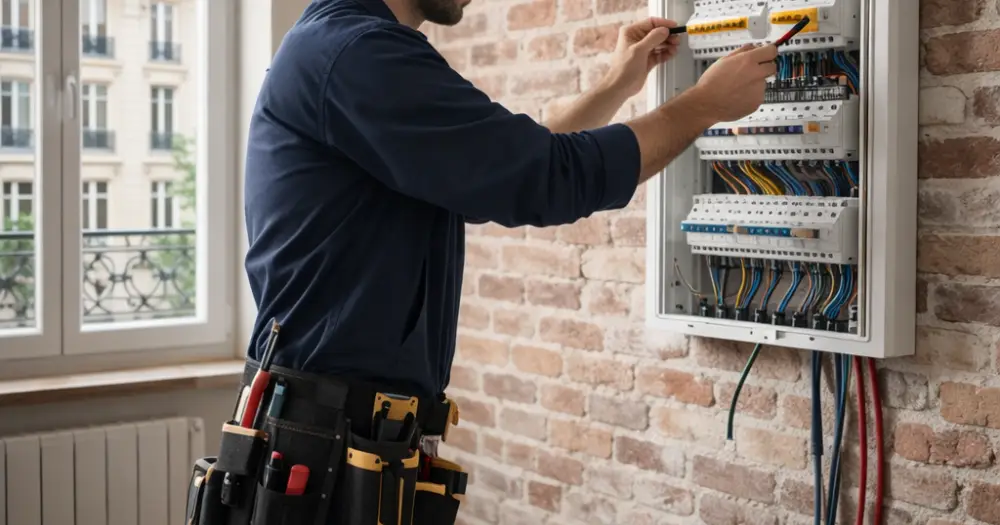

La rénovation électricité Paris 2026 s'impose comme une priorité majeure pour de nombreux propriétaires franciliens. Avec l'évolution constante des normes de sécurité et l'augmentation des besoins énergétiques des foyers modernes, mettre aux normes son installation électrique devient indispensable. Entre les nouvelles réglementations en vigueur, l'émergence de technologies plus performantes et les exigences croissantes en matière d'efficacité énergétique, rénover son système électrique nécessite une expertise technique approfondie. Cet article vous guide à travers tous les aspects essentiels de votre projet de rénovation électrique parisienne, des démarches administratives aux coûts prévisionnels, en passant par le choix des professionnels qualifiés.
Les Nouvelles Normes Électriques en Vigueur en 2026
La rénovation électricité Paris 2026 doit impérativement respecter la norme NF C 15-100, récemment mise à jour pour intégrer les évolutions technologiques actuelles. Cette réglementation impose désormais un nombre minimal de prises par pièce : 3 prises minimum dans les chambres, 6 dans le séjour et 4 dans la cuisine. Les circuits spécialisés sont obligatoires pour les gros électroménagers, avec des sections de câbles adaptées. La protection différentielle 30mA est généralisée sur tous les circuits, tandis que les disjoncteurs divisionnaires doivent être dimensionnés selon l'usage spécifique de chaque circuit. Pour les logements parisiens, souvent anciens, cette mise aux normes implique généralement un renouvellement complet du tableau électrique et une révision de la distribution.
Dispositifs de Protection Obligatoires
Chaque installation doit comporter un disjoncteur de branchement, un tableau de répartition avec protection différentielle, et des circuits séparés pour l'éclairage, les prises et les gros électroménagers. La mise à la terre est impérative dans tous les cas.
Tarifs et Coûts de Rénovation Électrique à Paris en 2026
Les prix pour une rénovation électricité Paris 2026 varient considérablement selon l'ampleur des travaux et la superficie du logement. Pour une rénovation complète d'un appartement parisien de 60m², comptez entre 8 000€ et 15 000€ TTC. Cette fourchette inclut la dépose de l'ancienne installation, la pose de nouveaux câblages, l'installation d'un tableau électrique aux normes et la mise en place de tous les équipements de protection. Pour un studio de 25m², les coûts oscillent entre 3 500€ et 6 000€, tandis qu'un grand appartement de 100m² peut nécessiter un investissement de 12 000€ à 25 000€. Ces tarifs intègrent la main-d'œuvre qualifiée, essentielle en Île-de-France où les réglementations sont strictement appliquées, ainsi que les matériaux de qualité professionnelle et les certifications obligatoires.
Détail des Postes de Coûts
Le tableau électrique représente 800€ à 2 500€, la repose complète des câbles 40€ à 80€/m linéaire, et la main-d'œuvre entre 45€ et 65€/heure selon la qualification de l'artisan électricien.
Démarches Administratives et Autorisations Nécessaires
Entreprendre une rénovation électricité Paris 2026 implique plusieurs démarches administratives spécifiques au contexte parisien. La déclaration préalable en mairie est obligatoire pour tous travaux de rénovation électrique, particulièrement dans les immeubles anciens ou classés. L'obtention du certificat de conformité Consuel (Comité National pour la Sécurité des Usagers de l'Électricité) est indispensable avant la remise sous tension définitive de l'installation. Ce document atteste que votre installation respecte toutes les normes de sécurité en vigueur. Dans certains arrondissements parisiens, notamment dans les zones protégées, des autorisations supplémentaires peuvent être requises auprès de l'Architecte des Bâtiments de France. Il est également crucial de prévenir votre assurance habitation et de vérifier que votre contrat couvre les travaux de rénovation électrique.
Inspection et Validation Finale
L'inspection Consuel vérifie la conformité de l'installation selon un cahier des charges précis : protection des personnes, qualité des matériaux utilisés, respect des sections de câbles et bon fonctionnement de tous les dispositifs de sécurité.
Technologies et Équipements Modernes en 2026
La rénovation électricité Paris 2026 intègre désormais des technologies avancées qui transforment l'habitat moderne. Les tableaux électriques connectés permettent un pilotage intelligent de la consommation énergétique, avec des applications mobiles dédiées pour surveiller et optimiser l'utilisation électrique en temps réel. L'intégration de prises USB murales devient standard, répondant aux besoins actuels de connectivité. Les systèmes de domotique filaire offrent un contrôle centralisé de l'éclairage, des volets roulants et des équipements électriques. La préparation aux bornes de recharge pour véhicules électriques est également anticipée dès la phase de conception, avec des circuits dédiés de forte puissance. Ces innovations s'accompagnent d'une attention particulière à l'efficacité énergétique, avec des équipements classe A+ et des dispositifs de délestage automatique pour optimiser la consommation.
Domotique et Maison Connectée
Les solutions domotiques actuelles permettent des économies d'énergie de 15 à 25% grâce à la programmation intelligente et à la détection de présence automatisée dans chaque pièce.
Choisir son Électricien : Critères et Certifications
Sélectionner le bon professionnel pour votre rénovation électricité Paris 2026 nécessite une attention particulière aux qualifications et certifications. Privilégiez impérativement un électricien disposant de la qualification RGE (Reconnu Garant de l'Environnement), ouvrant droit aux aides financières gouvernementales. La certification Qualifelec garantit un niveau de compétence technique élevé et une formation continue aux évolutions normatives. Vérifiez que l'artisan possède une assurance décennale couvrant spécifiquement les travaux électriques et qu'il est inscrit au répertoire des métiers. L'expérience sur les bâtiments parisiens anciens constitue un atout majeur, car ces constructions présentent des spécificités techniques particulières. Demandez systématiquement plusieurs devis détaillés et n'hésitez pas à consulter les avis clients et réalisations antérieures. Un professionnel sérieux propose toujours une visite technique préalable gratuite pour évaluer précisément l'ampleur des travaux nécessaires.
Labels de Qualité Reconnus
Les labels Qualibat, NF Service et la certification IRVE (Infrastructure de Recharge pour Véhicules Électriques) attestent du professionnalisme et de la spécialisation technique de l'entreprise choisie.
Aides Financières et Subventions Disponibles en 2026
La rénovation électricité Paris 2026 peut bénéficier de plusieurs dispositifs d'aides financières significatifs. MaPrimeRénov' couvre jusqu'à 35% du montant des travaux pour les ménages aux revenus modestes, avec des plafonds spécifiques pour l'Île-de-France tenant compte du coût de la vie élevé. L'éco-prêt à taux zéro permet de financer jusqu'à 50 000€ de travaux de rénovation énergétique, remboursables sur 20 ans maximum. Les certificats d'économies d'énergie (CEE) offrent des bonifications supplémentaires, particulièrement pour l'installation d'équipements performants et connectés. La Ville de Paris propose également des aides complémentaires dans le cadre de son plan climat, notamment pour les copropriétés engagées dans une démarche de rénovation globale. Ces dispositifs cumulables peuvent considérablement réduire le coût final de votre projet, à condition de respecter scrupuleusement les critères d'éligibilité et de faire appel à des professionnels certifiés RGE.
Conditions d'Éligibilité Spécifiques
Les aides sont conditionnées à l'ancienneté du logement (plus de 15 ans), au respect des normes techniques imposées et à l'intervention exclusive d'artisans qualifiés RGE pour la réalisation des travaux.
La rénovation électricité Paris 2026 représente un investissement majeur mais indispensable pour la sécurité et le confort de votre logement francilien. Entre les évolutions normatives, les innovations technologiques et les opportunités de financement, ce projet nécessite l'accompagnement d'experts qualifiés. Mistral Pro Reno, forte de son expérience dans la rénovation électrique en Île-de-France, vous accompagne de A à Z dans votre projet. Nos électriciens certifiés RGE maîtrisent parfaitement les spécificités des bâtiments parisiens et vous garantissent une installation aux normes 2026. Contactez dès maintenant Mistral Pro Reno pour obtenir votre devis gratuit et personnalisé, et transformer votre installation électrique en toute sérénité.
Questions fréquentes
Combien coûte une rénovation électrique complète à Paris en 2026 ?
Pour un appartement parisien de 60m², comptez entre 8 000€ et 15 000€ TTC, incluant la dépose, la repose complète et la mise aux normes selon la réglementation 2026.
Quelles sont les aides disponibles pour la rénovation électrique en 2026 ?
MaPrimeRénov' (jusqu'à 35%), l'éco-prêt à taux zéro (jusqu'à 50 000€), les CEE et les aides locales parisiennes sont cumulables sous conditions d'éligibilité.
La certification Consuel est-elle obligatoire en 2026 ?
Oui, le certificat de conformité Consuel reste obligatoire pour toute rénovation électrique et doit être obtenu avant la remise sous tension définitive de l'installation.
Quelle est la durée moyenne des travaux de rénovation électrique ?
Comptez 3 à 10 jours pour un appartement selon sa superficie et la complexité de l'installation, avec une planification précise pour minimiser les nuisances.
Besoin d'un devis pour votre projet ?
Obtenez une estimation gratuite en quelques clics avec notre simulateur.
Simulateur de Devis Gratuit